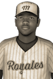

|
|
|  | Blacksher Batters Detroit for 5 Hits Saturday, September 13th, 1930 Today at Montreal Grounds, Clifton Blacksher led the Royales to a 15-6 triumph over the Detroit Lions. He collected 5 hits in 5 at-bats to help his club in the victory. Clifton Blacksher doubled in the 2nd, singled in the 4th, hit a two-run single in the 5th, singled in the 6th and hit an RBI double in the 8th. Presently Blacksher is batting .365 and has collected 8 home runs, 44 RBIs, .386 OBP and scored 45 runs. View Boxscore |   |